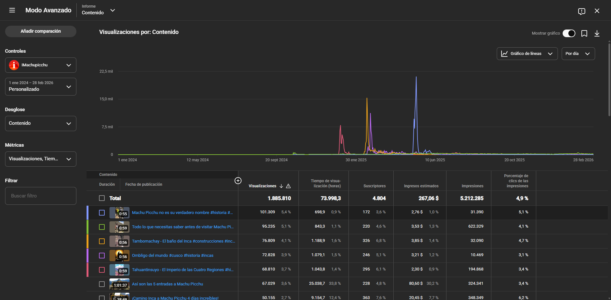

YouTube
7
Canalesadministrados
Visualizaciones+1.6M
Acumuladas en el canal principal durante mi gestión.
Produzco contenido audiovisual para redes sociales y plataformas digitales, desde la planificación y grabación hasta la edición y análisis de resultados. Combino producción en campo, edición de video y estrategia de contenido para generar crecimiento orgánico y aumentar el alcance de las marcas.
Lo que generé gestionando comunidades y contenido en plataformas digitales.
Acumuladas en el canal principal durante mi gestión.
Contenido vertical publicado de forma constante.
Crecimiento orgánico de la comunidad.
Grabación de video y fotografía para contenido turístico, comercial y redes sociales.
Edición en DaVinci Resolve y CapCut para videos largos, contenido vertical y piezas para redes.
Captura y edición de fotografías para campañas digitales y promoción de destinos turísticos.
Optimización de contenido y análisis de métricas para mejorar el rendimiento en plataformas digitales.
Destinos donde he realizado producción audiovisual.
Software y equipos con los que trabajo.

Producción y edición de contenido para YouTube, Facebook, Instagram y TikTok, enfocada en promocionar destinos turísticos del Cusco mediante contenido orgánico.
Mi participación
Estoy disponible para colaborar en producción audiovisual, edición de video y creación de contenido para empresas, agencias y proyectos turísticos.